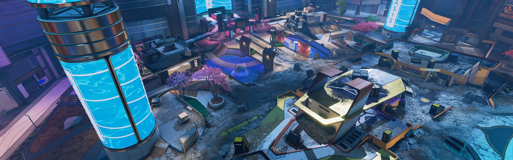

Battle Royale Maps

Kings Canyon
The first map available since the release of the game

Worlds Edge
The second map that was available since 1 October 2019 in season 3

Olympus
The third map added to the game on 4 November 2020 in season 7

Storm Point
Fourth map added on 2 November 2021 in season 11. The largest map added
Arena Maps

Overflow
Added in season 9 with all the other Arena maps

Encore
Added in season 9 with all the other Arena maps

Phaserunner
Added in season 9 with all the other Arena maps

Partycrasher
Added in season 9 with all the other Arena maps